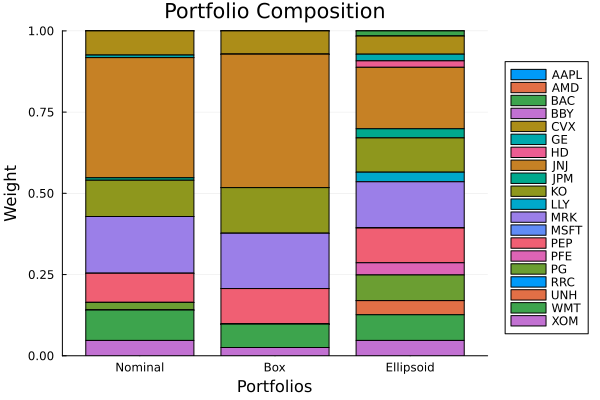
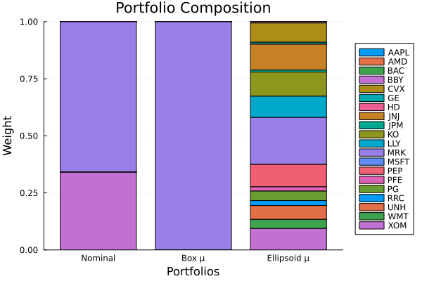
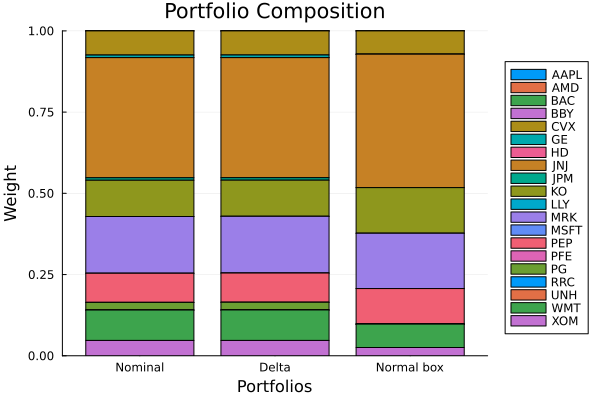

The source files can be found in examples/.
Uncertainty sets
The view priors so far (Black–Litterman, Entropy Pooling, Opinion Pooling) change what the moments are. Robust optimisation takes the opposite stance: it accepts that the estimated moments are wrong by some amount and optimises against the worst case within an uncertainty set around them. Rather than trusting a single point estimate of the covariance (or mean), you bound a region the true value plausibly lies in and minimise the worst-case risk (or maximise the worst-case return) over that region. The result is an allocation that is stable to estimation error by construction.
PortfolioOptimisers builds uncertainty sets with an estimator such as NormalUncertaintySet and an algorithm — BoxUncertaintySetAlgorithm (a per-entry interval box) or EllipsoidalUncertaintySetAlgorithm (a joint ellipsoid). The helper sigma_ucs produces a covariance set and mu_ucs a mean set; the covariance set parametrises a robust risk measure like UncertaintySetVariance, while the mean set plugs into ArithmeticReturn to give a worst-case expected return. This page is a deep dive across both: covariance robustness, the confidence level that sizes the set, and worst-case-mean robust returns.
Reach for uncertainty sets when you care less about a forecast and more about robustness to the noise in the moments — short windows, unstable covariances, regime risk. A box set is simple and conservative (it bounds each entry independently); an ellipsoidal set captures the joint geometry. Which one diversifies depends on what you make robust: see sections 4 and 5 below. If you have actual views about where the moments are headed, reach for the view priors instead — or combine both, since a robust risk measure composes with any prior.
using PortfolioOptimisers, PrettyTables, StableRNGsresfmt = (v, i, j) -> begin if j == 1 return v else return isa(v, Number) ? "$(round(v*100, digits=3)) %" : v endend;1. ReturnsResult data
We use the same S&P 500 slice as the other examples.
using CSV, TimeSeries, DataFramesX = TimeArray(CSV.File(joinpath(@__DIR__, "..", "SP500.csv.gz")); timestamp = :Date)[(end - 252):end]rd = prices_to_returns(X)pr = prior(EmpiricalPrior(), rd)LowOrderPrior
X ┼ 252×20 Matrix{Float64}
o_X ┼ nothing
mu ┼ 20-element Vector{Float64}
sigma ┼ 20×20 Matrix{Float64}
chol ┼ nothing
w ┼ nothing
ens ┼ nothing
kld ┼ nothing
ow ┼ nothing
rr ┼ nothing
fpr ┴ nothing
2. Building covariance uncertainty sets
We construct two covariance uncertainty sets from a NormalUncertaintySet — one box, one ellipsoidal. The set is estimated by resampling, so we fix an RNG for reproducibility.
ucs_box = sigma_ucs(NormalUncertaintySet(; pe = EmpiricalPrior(), rng = StableRNG(1), alg = BoxUncertaintySetAlgorithm()), rd.X)ucs_ell = sigma_ucs(NormalUncertaintySet(; pe = EmpiricalPrior(), rng = StableRNG(1), alg = EllipsoidalUncertaintySetAlgorithm()), rd.X)EllipsoidalUncertaintySet
sigma ┼ 400×400 LinearAlgebra.Diagonal{Float64, Vector{Float64}}
k ┼ Float64: 21.15732657569969
class ┼ SigmaUncertaintySetClass()
val ┴ 20×20 Matrix{Float64}
3. The confidence level q sizes the set
NormalUncertaintySet takes a confidence level q (default 0.05). It controls how big the uncertainty set is: a smaller q is more demanding and yields a larger, more conservative set, because you are insuring against a more extreme worst case. For a box set this widens every per-entry interval; for an ellipsoidal set it inflates the radius. We sweep q and measure the total width of the box (the sum of interval lengths) to watch the set grow as q shrinks.
qs = [0.01, 0.05, 0.10, 0.20]box_widths = [let u = sigma_ucs(NormalUncertaintySet(; rng = StableRNG(1), q = q, alg = BoxUncertaintySetAlgorithm()), rd.X) sum(abs, u.ub .- u.lb) end for q in qs]pretty_table(DataFrame(; q = qs, Symbol("box total width") => box_widths); title = "Smaller q → wider (more conservative) uncertainty set")Smaller q → wider (more conservative) uncertainty set
┌─────────┬─────────────────┐
│ q │ box total width │
│ Float64 │ Float64 │
├─────────┼─────────────────┤
│ 0.01 │ 0.0576656 │
│ 0.05 │ 0.0440054 │
│ 0.1 │ 0.0370207 │
│ 0.2 │ 0.028841 │
└─────────┴─────────────────┘4. Robust vs nominal minimum-variance
UncertaintySetVariance is the robust counterpart of Variance: it minimises the worst-case variance over the uncertainty set rather than the point estimate. We compare a nominal minimum-variance portfolio against the box- and ellipsoid-robust versions.
using Clarabelslv = Solver(; name = :clarabel1, solver = Clarabel.Optimizer, settings = Dict("verbose" => false), check_sol = (; allow_local = true, allow_almost = true))res_nom = optimise(MeanRisk(; r = Variance(), obj = MinimumRisk(), opt = JuMPOptimiser(; pe = pr, slv = slv)))res_box = optimise(MeanRisk(; r = UncertaintySetVariance(; ucs = ucs_box), obj = MinimumRisk(), opt = JuMPOptimiser(; pe = pr, slv = slv)))res_ell = optimise(MeanRisk(; r = UncertaintySetVariance(; ucs = ucs_ell), obj = MinimumRisk(), opt = JuMPOptimiser(; pe = pr, slv = slv)))MeanRiskResult
jr ┼ JuMPOptimisationResult
│ pa ┼ ProcessedJuMPOptimiserAttributes
│ │ pr ┼ LowOrderPrior
│ │ │ X ┼ 252×20 Matrix{Float64}
│ │ │ o_X ┼ nothing
│ │ │ mu ┼ 20-element Vector{Float64}
│ │ │ sigma ┼ 20×20 Matrix{Float64}
│ │ │ chol ┼ nothing
│ │ │ w ┼ nothing
│ │ │ ens ┼ nothing
│ │ │ kld ┼ nothing
│ │ │ ow ┼ nothing
│ │ │ rr ┼ nothing
│ │ │ fpr ┴ nothing
│ │ wb ┼ WeightBounds
│ │ │ lb ┼ 20-element StepRangeLen{Float64, Base.TwicePrecision{Float64}, Base.TwicePrecision{Float64}, Int64}
│ │ │ ub ┴ 20-element StepRangeLen{Float64, Base.TwicePrecision{Float64}, Base.TwicePrecision{Float64}, Int64}
│ │ lt ┼ nothing
│ │ st ┼ nothing
│ │ lcsr ┼ nothing
│ │ ctr ┼ nothing
│ │ gcardr ┼ nothing
│ │ sgcardr ┼ nothing
│ │ smtx ┼ nothing
│ │ sgmtx ┼ nothing
│ │ slt ┼ nothing
│ │ sst ┼ nothing
│ │ sglt ┼ nothing
│ │ sgst ┼ nothing
│ │ tn ┼ nothing
│ │ fees ┼ nothing
│ │ plr ┼ nothing
│ │ ret ┼ ArithmeticReturn
│ │ │ settings ┼ JuMPReturnsSettings
│ │ │ │ scale ┼ Float64: 1.0
│ │ │ │ lb ┼ nothing
│ │ │ │ rte ┼ Bool: true
│ │ │ │ fee ┼ Bool: true
│ │ │ │ mic ┴ Bool: true
│ │ │ ucs ┼ nothing
│ │ │ mu ┴ 20-element Vector{Float64}
│ │ sca ┼ SumScalariser()
│ │ imsk ┴ nothing
│ retcode ┼ OptimisationSuccess
│ │ res ┴ Dict{Any, Any}: Dict{Any, Any}()
│ sol ┼ JuMPOptimisationSolution
│ │ w ┴ 20-element Vector{Float64}
│ model ┼ A JuMP Model
│ │ ├ solver: Clarabel
│ │ ├ objective_sense: MIN_SENSE
│ │ │ └ objective_function_type: AffExpr
│ │ ├ num_variables: 441
│ │ ├ num_constraints: 6
│ │ │ ├ AffExpr in MOI.EqualTo{Float64}: 1
│ │ │ ├ Vector{AffExpr} in MOI.Nonnegatives: 1
│ │ │ ├ Vector{AffExpr} in MOI.Nonpositives: 1
│ │ │ ├ Vector{AffExpr} in MOI.SecondOrderCone: 1
│ │ │ ├ Vector{AffExpr} in MOI.PositiveSemidefiniteConeTriangle: 1
│ │ │ └ Vector{AffExpr} in MOI.PositiveSemidefiniteConeSquare: 1
│ │ └ Names registered in the model
│ │ └ :E, :M, :M_PSD, :T, :W, :WpE, :bgt, :ceucs_variance, :eucs_variance_risk_1, :ge_soc1, :k, :lw, :obj_expr, :ret, :ret_1, :ret_vec, :risk, :risk_vec, :sc, :so, :t_eucs1, :variance_flag, :w, :w_lb, :w_ub, :x_eucs1
r ┼ UncertaintySetVariance
│ settings ┼ RiskMeasureSettings
│ │ scale ┼ Float64: 1.0
│ │ ub ┼ nothing
│ │ rke ┴ Bool: true
│ ucs ┼ EllipsoidalUncertaintySet
│ │ sigma ┼ 400×400 LinearAlgebra.Diagonal{Float64, Vector{Float64}}
│ │ k ┼ Float64: 21.15732657569969
│ │ class ┼ SigmaUncertaintySetClass()
│ │ val ┴ 20×20 Matrix{Float64}
│ sigma ┴ 20×20 Matrix{Float64}
fb ┴ nothing
The robust portfolios hedge against covariance estimation error. For covariance robustness the ellipsoidal set — which captures the joint geometry of the estimation error rather than bounding each entry on its own — typically produces the more diversified, less concentrated allocation.
pretty_table(DataFrame(["Assets" => rd.nx, "Nominal" => res_nom.w, "Box-robust" => res_box.w, "Ellipsoid-robust" => res_ell.w]); formatters = [resfmt], title = "Minimum-variance weights: nominal vs robust") Minimum-variance weights: nominal vs robust
┌────────┬──────────┬────────────┬──────────────────┐
│ Assets │ Nominal │ Box-robust │ Ellipsoid-robust │
│ String │ Float64 │ Float64 │ Float64 │
├────────┼──────────┼────────────┼──────────────────┤
│ AAPL │ 0.0 % │ 0.0 % │ 0.0 % │
│ AMD │ 0.0 % │ 0.0 % │ 0.0 % │
│ BAC │ 0.0 % │ 0.0 % │ 1.595 % │
│ BBY │ 0.0 % │ 0.0 % │ 0.0 % │
│ CVX │ 7.432 % │ 7.168 % │ 5.578 % │
│ GE │ 0.806 % │ 0.0 % │ 2.045 % │
│ HD │ 0.0 % │ 0.0 % │ 1.998 % │
│ JNJ │ 36.974 % │ 41.083 % │ 18.906 % │
│ JPM │ 0.749 % │ 0.0 % │ 2.822 % │
│ KO │ 11.161 % │ 14.02 % │ 10.551 % │
│ LLY │ 0.0 % │ 0.0 % │ 2.94 % │
│ MRK │ 17.467 % │ 17.04 % │ 14.114 % │
│ MSFT │ 0.0 % │ 0.0 % │ 0.13 % │
│ PEP │ 8.978 % │ 10.924 % │ 10.694 % │
│ PFE │ 0.0 % │ 0.0 % │ 3.76 % │
│ PG │ 2.353 % │ 0.001 % │ 7.888 % │
│ RRC │ 0.0 % │ 0.0 % │ 0.0 % │
│ UNH │ 0.0 % │ 0.0 % │ 4.343 % │
│ WMT │ 9.355 % │ 7.207 % │ 7.899 % │
│ XOM │ 4.725 % │ 2.557 % │ 4.736 % │
└────────┴──────────┴────────────┴──────────────────┘Nominal vs box- vs ellipsoid-robust minimum variance.
using StatsPlots, GraphRecipesplot_stacked_bar_composition([res_nom, res_box, res_ell], rd; xticks = (1:3, ["Nominal", "Box", "Ellipsoid"]))
5. Worst-case mean: robust expected returns
Robustness is not only about the covariance. A mean uncertainty set, built with mu_ucs, plugs into ArithmeticReturn via its ucs keyword and makes the optimiser maximise the worst-case expected return over the set instead of the point estimate. This guards a return-seeking objective against the fact that sample means are extremely noisy over a single year.
A wiring note worth knowing: pass ArithmeticReturn a pre-built mean set (the result of mu_ucs), exactly as UncertaintySetVariance takes a pre-built sigma_ucs result. (Handing it the estimator instead defers construction to solve time and requires the returns data to be threaded through the optimiser.)
rf = 4.2 / 100 / 252mu_box = mu_ucs(NormalUncertaintySet(; pe = EmpiricalPrior(), rng = StableRNG(1), alg = BoxUncertaintySetAlgorithm()), rd)mu_ell = mu_ucs(NormalUncertaintySet(; pe = EmpiricalPrior(), rng = StableRNG(1), alg = EllipsoidalUncertaintySetAlgorithm()), rd)ret_nom = optimise(MeanRisk(; obj = MaximumRatio(; rf = rf), opt = JuMPOptimiser(; pe = pr, slv = slv)))ret_box = optimise(MeanRisk(; obj = MaximumRatio(; rf = rf), opt = JuMPOptimiser(; pe = pr, slv = slv, ret = ArithmeticReturn(; ucs = mu_box))))ret_ell = optimise(MeanRisk(; obj = MaximumRatio(; rf = rf), opt = JuMPOptimiser(; pe = pr, slv = slv, ret = ArithmeticReturn(; ucs = mu_ell))))MeanRiskResult
jr ┼ JuMPOptimisationResult
│ pa ┼ ProcessedJuMPOptimiserAttributes
│ │ pr ┼ LowOrderPrior
│ │ │ X ┼ 252×20 Matrix{Float64}
│ │ │ o_X ┼ nothing
│ │ │ mu ┼ 20-element Vector{Float64}
│ │ │ sigma ┼ 20×20 Matrix{Float64}
│ │ │ chol ┼ nothing
│ │ │ w ┼ nothing
│ │ │ ens ┼ nothing
│ │ │ kld ┼ nothing
│ │ │ ow ┼ nothing
│ │ │ rr ┼ nothing
│ │ │ fpr ┴ nothing
│ │ wb ┼ WeightBounds
│ │ │ lb ┼ 20-element StepRangeLen{Float64, Base.TwicePrecision{Float64}, Base.TwicePrecision{Float64}, Int64}
│ │ │ ub ┴ 20-element StepRangeLen{Float64, Base.TwicePrecision{Float64}, Base.TwicePrecision{Float64}, Int64}
│ │ lt ┼ nothing
│ │ st ┼ nothing
│ │ lcsr ┼ nothing
│ │ ctr ┼ nothing
│ │ gcardr ┼ nothing
│ │ sgcardr ┼ nothing
│ │ smtx ┼ nothing
│ │ sgmtx ┼ nothing
│ │ slt ┼ nothing
│ │ sst ┼ nothing
│ │ sglt ┼ nothing
│ │ sgst ┼ nothing
│ │ tn ┼ nothing
│ │ fees ┼ nothing
│ │ plr ┼ nothing
│ │ ret ┼ ArithmeticReturn
│ │ │ settings ┼ JuMPReturnsSettings
│ │ │ │ scale ┼ Float64: 1.0
│ │ │ │ lb ┼ nothing
│ │ │ │ rte ┼ Bool: true
│ │ │ │ fee ┼ Bool: true
│ │ │ │ mic ┴ Bool: true
│ │ │ ucs ┼ EllipsoidalUncertaintySet
│ │ │ │ sigma ┼ 20×20 LinearAlgebra.Diagonal{Float64, Vector{Float64}}
│ │ │ │ k ┼ Float64: 5.604501123581913
│ │ │ │ class ┼ MuUncertaintySetClass()
│ │ │ │ val ┴ 20-element Vector{Float64}
│ │ │ mu ┴ 20-element Vector{Float64}
│ │ sca ┼ SumScalariser()
│ │ imsk ┴ nothing
│ retcode ┼ OptimisationSuccess
│ │ res ┴ Dict{Any, Any}: Dict{Any, Any}()
│ sol ┼ JuMPOptimisationSolution
│ │ w ┴ 20-element Vector{Float64}
│ model ┼ A JuMP Model
│ │ ├ solver: Clarabel
│ │ ├ objective_sense: MAX_SENSE
│ │ │ └ objective_function_type: AffExpr
│ │ ├ num_variables: 23
│ │ ├ num_constraints: 7
│ │ │ ├ AffExpr in MOI.EqualTo{Float64}: 1
│ │ │ ├ QuadExpr in MOI.LessThan{Float64}: 1
│ │ │ ├ Vector{AffExpr} in MOI.Nonnegatives: 1
│ │ │ ├ Vector{AffExpr} in MOI.Nonpositives: 1
│ │ │ ├ Vector{AffExpr} in MOI.SecondOrderCone: 2
│ │ │ └ VariableRef in MOI.GreaterThan{Float64}: 1
│ │ └ Names registered in the model
│ │ └ :G, :T, :bgt, :cdev_soc_1, :dev_1, :eucs_ret_1, :k, :lw, :obj_expr, :ohf, :ret, :ret_1, :ret_vec, :risk, :risk_vec, :sc, :so, :sr_risk, :t_eucs_gw_1, :variance_flag, :variance_risk_1, :w, :w_lb, :w_ub, :x_eucs_w_1
r ┼ Variance
│ settings ┼ RiskMeasureSettings
│ │ scale ┼ Float64: 1.0
│ │ ub ┼ nothing
│ │ rke ┴ Bool: true
│ sigma ┼ 20×20 Matrix{Float64}
│ chol ┼ nothing
│ rc ┼ nothing
│ alg ┴ SquaredSOCRiskExpr()
fb ┴ nothing
The geometry flips relative to the covariance case. With a box mean set every asset's mean is pushed to its own lower bound independently, so the worst-case maximum-ratio portfolio piles into whichever single name still has the best worst-case Sharpe — it concentrates. The ellipsoidal mean set couples the assets through the joint estimation geometry, so no single name can be cheap in isolation and the worst-case allocation spreads out toward a near-equal-weight portfolio. The lesson: "box vs ellipsoid" does not map to "concentrated vs diversified" in the abstract — it depends on whether you are making the mean or the covariance robust.
At these radii no portfolio's worst-case return beats rf, so the ratio is non-positive everywhere and there is no tangency portfolio to find. MaximumRatio answers at its scale floor kmin rather than on the degenerate ray, which is why the weights above respect their constraints; read them as "the best worst-case return at that scale", not as a worst-case tangency portfolio. The nominal book above is unaffected — it has a real one.
pretty_table(DataFrame(["Assets" => rd.nx, "Nominal" => ret_nom.w, "Box worst-case mean" => ret_box.w, "Ellipsoid worst-case mean" => ret_ell.w]); formatters = [resfmt], title = "Maximum-ratio weights: nominal vs worst-case mean")plot_stacked_bar_composition([ret_nom, ret_box, ret_ell], rd; xticks = (1:3, ["Nominal", "Box μ", "Ellipsoid μ"]))
6. Other set estimators: Delta and the ARCH bootstrap
NormalUncertaintySet resamples under a Gaussian assumption, but it is not the only estimator. The simplest alternative is DeltaUncertaintySet: a fixed fractional perturbation box around the point estimate, with no resampling at all. It is deterministic and essentially free to build — the set size is a modelling choice rather than something learned from the data. We build a covariance box with it and compare its total width against the Normal box from section 2.
ucs_delta = sigma_ucs(DeltaUncertaintySet(), rd.X)set_width(u) = sum(abs, u.ub .- u.lb)pretty_table(DataFrame(; estimator = ["Delta (fixed)", "Normal (q=0.05)"], Symbol("box total width") => [set_width(ucs_delta), set_width(ucs_box)]); title = "Delta is a tight, deterministic box") Delta is a tight, deterministic box
┌─────────────────┬─────────────────┐
│ estimator │ box total width │
│ String │ Float64 │
├─────────────────┼─────────────────┤
│ Delta (fixed) │ 0.0131652 │
│ Normal (q=0.05) │ 0.0440054 │
└─────────────────┴─────────────────┘The Delta set is tighter than the Normal one here — a small fixed perturbation rather than a resampled interval. It plugs into UncertaintySetVariance exactly like the Normal set, so we solve a robust minimum-variance portfolio with it and compare against the Normal-box version from section 4.
res_delta = optimise(MeanRisk(; r = UncertaintySetVariance(; ucs = ucs_delta), obj = MinimumRisk(), opt = JuMPOptimiser(; pe = pr, slv = slv)))pretty_table(DataFrame(["Assets" => rd.nx, "Delta-robust" => res_delta.w, "Normal-box-robust" => res_box.w]); formatters = [resfmt], title = "Minimum-variance weights: Delta vs Normal box")plot_stacked_bar_composition([res_nom, res_delta, res_box], rd; xticks = (1:3, ["Nominal", "Delta", "Normal box"]))
For a set that reflects the data's own tail thickness and serial dependence rather than a Gaussian or a fixed delta, use ARCHUncertaintySet. It resamples the returns with a block bootstrap — StationaryBootstrap, MovingBootstrap, or CircularBootstrap — and is built the same way:
ucs_arch = sigma_ucs(ARCHUncertaintySet(; alg = BoxUncertaintySetAlgorithm(), bootstrap = StationaryBootstrap(), n_sim = 100, seed = 1), rd.X)The resulting set is wider than the Gaussian one (it captures fat tails and autocorrelation that the Normal estimator misses) and drops into UncertaintySetVariance identically. It is the most data-driven of the three estimators and also the most expensive — it runs n_sim bootstrap resamples — so it is described here rather than executed in this page.
This page was generated using Literate.jl.